给id字段添加索引，并且该索引使用了
给id字段添加索引，并且该索引使用了红黑树数据结构，那么会是这样：
索引是一种能够提高检索（查询）效率的提前排好序的数据结构。例如：书的目录就是一种索引机制。索引是解决SQL慢查询的一种方式。
主键索引唯一索引CREATE TABLE emp (
...
name varchar(255),
...
INDEX idx_name (name)
);
2. 如果表已经创建好了，后期给字段添加索引
ALTER TABLE emp ADD INDEX idx_name (name);
3. 也可以这样添加索引：
create index idx_name on emp(name);
ALTER TABLE emp DROP INDEX idx_name;
show index from 表名;
不同的存储引擎有不同的索引类型和实现：
memory 存储引擎支持）：采用 哈希表 的数据结构InnoDB和MyISAM 存储引擎支持）常见的树相关的数据结构包括：
区别：树的高度不同。树的高度越低，性能越高。这是因为每一个节点都是一次I/O
有这样一张表
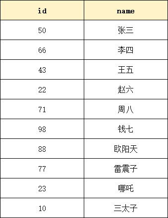
如果不给id字段添加索引，默认进行全表扫描，假设查询id=10的数据，那至少要进行10次磁盘IO。效率低。可以给id字段添加索引，假设该索引使用了二叉树这种数据结构，这个二叉树是这样的 (推荐一个数据结构可视化网：Data Structure Visualizations)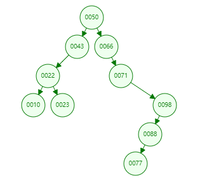
如果这个时候要找id=10的数据，需要的IO次数是？4次。效率显著提升了。 但是MySQL并没有直接使用这种普通的二叉树，这种普通二叉树在数据极端的情况下，效率较低。比如下面的数据：
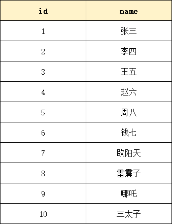
如果给id字段添加索引，并且该索引底层使用了普通二叉树，这棵树会是这样的：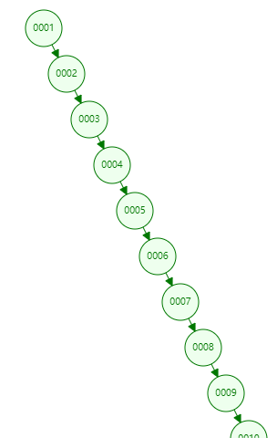
你虽然使用了二叉树，但这更像一个链表。查找效率等同于链表查询O(n)【查找算法的时间复杂度是线性的】。查找效率极低。 因此对于MySQL来说，它并没有选择这种数据结构作为索引。通过自旋平衡规则进行旋转，子节点会自动分叉为2个分支，从而减少树的高度，当数据有序插入时比二叉树数据检索性能更好。
例如有以下数据
给id字段添加索引，并且该索引使用了红黑树数据结构，那么会是这样：
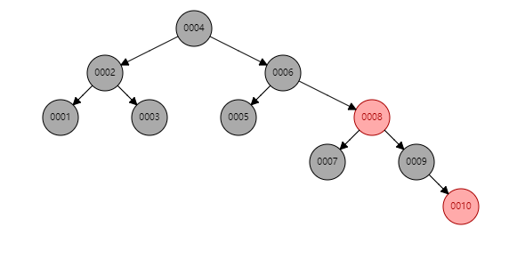
如果查找id=10的数据，磁盘IO次数为：5次。效率比普通二叉树要高一些。但是如果数据量庞大，例如500万条数据，也会导致树的高度很高，磁盘IO次数仍然很多，查询效率也会比较低。
因此MySQL并没有使用红黑树这种数据结构作为索引。
B Trees首先是一个自平衡的。
B Trees每个节点下的子节点数量 > 2。
B Trees每个节点中也不是存储单个数据，可以存储多个数据。
B Trees又称为平衡多路查找树。
B Trees分支的数量不是2，是大于2，具体是多少个分支，由阶决定。例如：
采用B Trees，你会发现相同的数据量，B Tree 树的高度更低。磁盘IO次数更少。 3阶的B Trees：
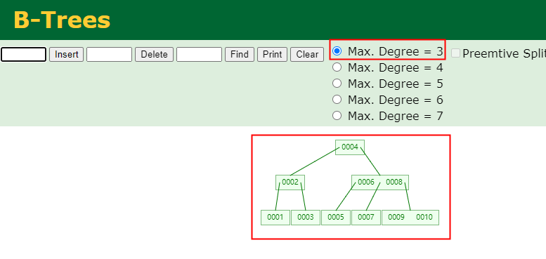
假设id字段添加了索引，并且采用了B Trees数据结构，查找id=10的数据，只需要3次磁盘IO。 4阶的B Trees：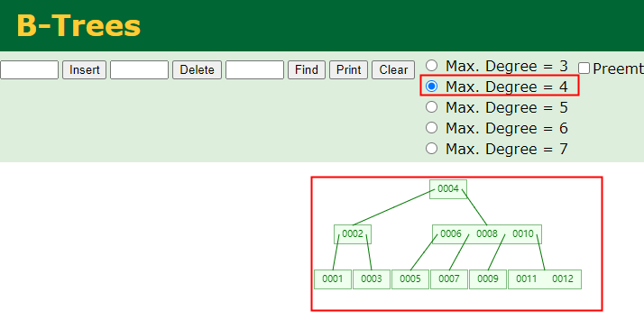
更加详细的存储是这样的，请看下图：
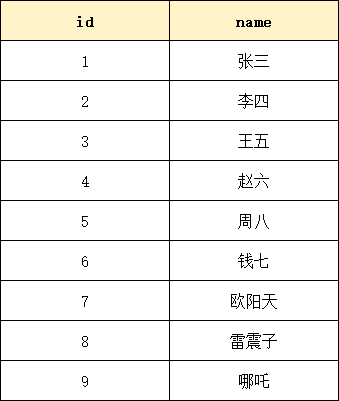
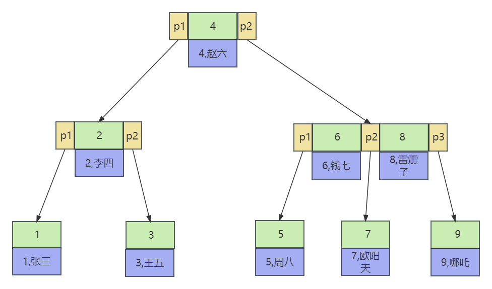
在B Trees中，每个节点不仅存储了索引值，还存储该索引值对应的数据行。
并且每个节点中的p1 p2 p3是指向下一个节点的指针。
B Trees数据结构存在的缺点是：不适合做区间查找，对于区间查找效率较低。假设要查id在[3~7]之间的，需要查找的是3,4,5,6,7。那么查这每个索引值都需要从头节点开始。 因此MySQL使用了B+ Trees解决了这个问题。
B+ Trees 相较于 B Trees改进了哪些？
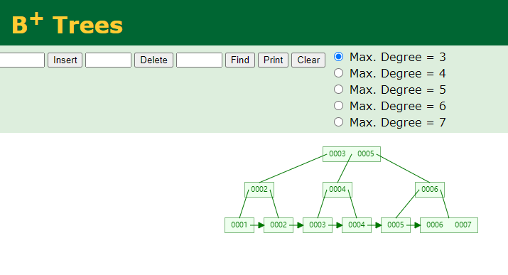
假设有这样一张表：
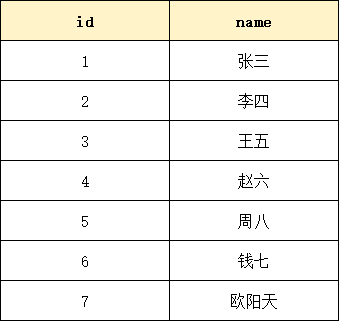
B+ Trees方式存储的话如下图所示：
经典面试题：mysql为什么选择B+树作为索引的数据结构，而不是B树？
经典面试题：如果一张表没有主键索引，那还会创建B+树吗？
当一张表没有主键索引时，默认会使用一个隐藏的内置的聚集索引（clustered index）。这个聚集索引是基于表的物理存储顺序构建的，通常是使用B+树来实现的。
支持Hash索引的存储引擎有：
自适应的Hash索引）show index from 表名的时候，还是BTREE。Hash索引底层的数据结构就是哈希表。一个数组，数组中每个元素是链表。和java中HashMap一样。哈希表中每个元素都是key value结构。key存储索引值，value存储行指针。
原理如下：
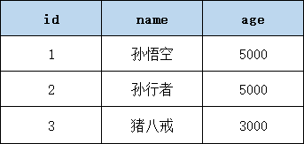
如果name字段上添加了Hash索引idx_nameHash索引长这个样子：
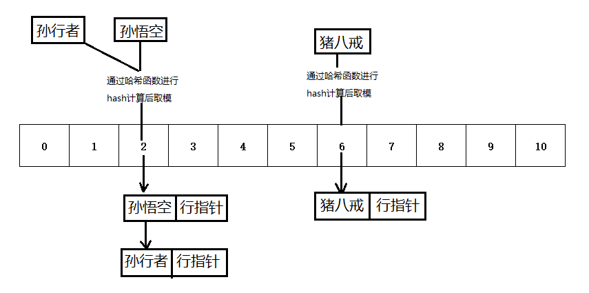
检索原理：假设 name='孙行者'。通过哈希算法将'孙行者'转换为数组下标，通过下标找链表，在链表上遍历找到孙行者的行指针。
注意：不同的字符串，经过哈希算法得到的数组下标可能相同，这叫做哈希碰撞/哈希冲突。(不过，好的哈希算法应该具有很低的碰撞概率。常用的哈希算法如MD5、SHA-1、SHA-256等都被设计为尽可能减少碰撞的发生。)
Hash索引优缺点：
按照数据的物理存储方式不同，可以将索引分为聚集索引（聚簇索引）和非聚集索引（非聚簇索引）。
存储引擎是InnoDB的，主键上的索引属于聚集索引。 存储引擎是MyISAM的，任意字段上的索引都是非聚集索引。
InnoDB的物理存储方式：当创建一张表t_user，并使用InnoDB存储引擎时，会在硬盘上生成这样一个文件：
MyISAM的物理存储方式：当创建一张表t_user，并使用MyISAM存储引擎时，会在硬盘上生成这样一个文件：
注意：从MySQL8.0开始，不再生成frm文件了，引入了数据字典，用数据字典来统一存储表结构信息，例如
聚集索引的原理图：（B+树，叶子节点上存储了索引值 + 数据）
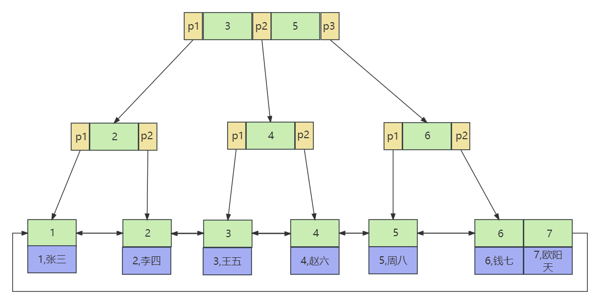
非聚集索引的原理图：（B+树，叶子节点上存储了索引值 + 行指针）
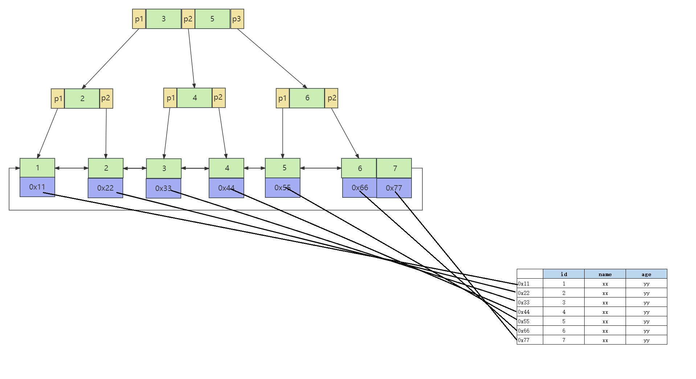
聚集索引的优点和缺点：
二级索引也属于非聚集索引。也有人把二级索引称为辅助索引。 有表t_user，id是主键。age是非主键。在age字段上添加的索引称为二级索引。（所有非主键索引都是二级索引）
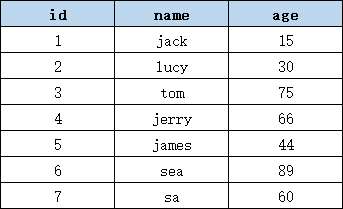
二级索引的数据结构：
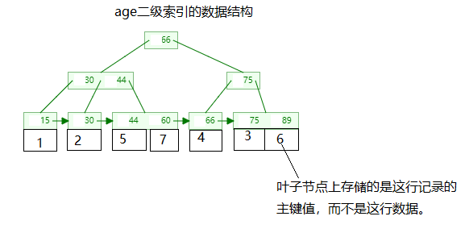
二级索引的查询原理： 假设查询语句为：
select * from t_user where age = 30;
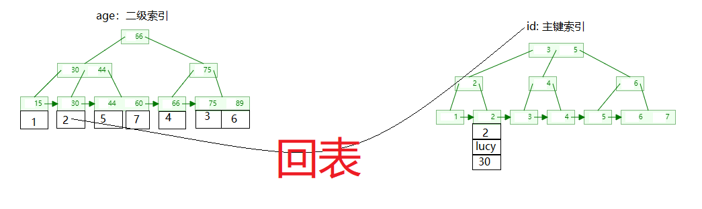
为什么会“回表”？因为使用了select *
避免“回表【回到原数据表】”是提高SQL执行效率的手段。例如：select id from t_user where age = 30; 这样的SQL语句是不需要回表的。
覆盖索引（Covering Index），顾名思义，是指某个查询语句可以通过索引的覆盖来完成，而不需要回表查询真实数据。其中的覆盖指的是在执行查询语句时，查询需要的所有列都可以从索引中提取到，而不需要再去查询实际数据行获取查询所需数据。 当使用覆盖索引时，MySQL可以直接通过索引，也就是索引上的数据来获取所需的结果，而不必再去查找表中的数据。这样可以显著提高查询性能。
假设有一个用户表（user）包含以下列：id, username, email, age。
常见的查询是根据用户名查询用户的邮箱。如果为了提高这个查询的性能，可以创建一个覆盖索引，包含（username, email）这两列。
创建覆盖索引的SQL语句可以如下：
CREATE INDEX idx_user_username_email ON user (username, email);
当执行以下查询时：
SELECT email FROM user WHERE username = 'lucy';
MySQL可以直接使用覆盖索引（idx_user_username_email）来获取查询结果，而不必再去查找用户表中的数据。这样可以减少磁盘I/O并提高查询效率。而如果没有覆盖索引，MySQL会先使用索引（username）来找到匹配的行，然后再回表查询获取邮箱，这个过程会增加更多的磁盘I/O和查询时间。
值得注意的是，覆盖索引的创建需要考虑查询的字段选择。如果查询需要的字段较多，可能需要创建包含更多列的覆盖索引，以满足完全覆盖查询的需要。
覆盖索引具有以下优点：
覆盖索引的缺点包括：
索引下推（Index Condition Pushdown）是一种 MySQL 中的优化方法，它可以将查询中的过滤条件下推到索引层级中处理，从而减少回表次数，优化查询性能。
具体来说，在使用索引下推时，MySQL 会在索引的叶节点层级执行查询的过滤条件，过滤掉无用的索引记录，仅返回符合条件的记录的主键，这样就可以避免查询时回表读取表格的数据行，从而缩短了整个查询过程的时间。
假设有以下表结构：
表名：users
| id | name | age | city |
|---|---|---|---|
| 1 | John | 25 | New York |
| 2 | Alice | 30 | London |
| 3 | Bob | 40 | Paris |
| 4 | Olivia | 35 | Berlin |
| 5 | Michael | 28 | Sydney |
现在我们创建了一个多列索引：（索引下推通常是基于多列索引的。）
ALTER TABLE users ADD INDEX idx_name_city_age (name, city, age);
假设我们要查询年龄大于30岁，并且所在城市是"London"的用户，假设只给age字段添加了索引，它就不会使用索引下推。传统的查询优化器会将所有满足年龄大于30岁的记录读入内存，然后再根据城市进行筛选。
使用索引下推优化后，在索引范围扫描的过程中，优化器会判断只有在城市列为"London"的情况下，才会将满足年龄大于30岁的记录加载到内存中。这样就可以避免不必要的IO和数据传输，提高查询性能。
具体的查询语句可以是：
SELECT * FROM users WHERE age > 30 AND city = 'London';
在执行这个查询时，优化器会使用索引下推技术，先根据索引范围扫描找到所有满足条件的记录，然后再回到原数据表中获取完整的行数据，最终返回结果。
单列索引是指对数据库表中的某一列或属性进行索引创建，对该列进行快速查找和排序操作。单列索引可以加快查询速度，提高数据库的性能。
举个例子，假设我们有一个学生表（student），其中有以下几个列：学生编号（student_id）、姓名（name）、年龄（age）和性别（gender）。
如果我们针对学生表的学生编号（student_id）列创建了单列索引，那么可以快速地根据学生编号进行查询或排序操作。例如，我们可以使用以下SQL语句查询学生编号为123456的学生信息：
SELECT * FROM student WHERE student_id = 123456;
由于我们对学生编号列建立了单列索引，所以数据库可以直接通过索引快速定位到具有学生编号123456的那一行记录，从而加快查询速度。
复合索引（Compound Index）也称为多列索引（Multi-Column Index），是指对数据库表中多个列进行索引创建。
与单列索引不同，复合索引可以包含多个列。这样可以将多个列的值组合起来作为索引的键，以提高多列条件查询的效率。
举个例子，假设我们有一个订单表（Order），其中包含以下几个列：订单编号（OrderID）、客户编号（CustomerID）、订单日期（OrderDate）和订单金额（OrderAmount）。
如果我们为订单表的客户编号和订单日期这两列创建复合索引（CustomerID, OrderDate），那么可以在查询时同时根据客户编号和订单日期来快速定位到匹配的记录。
例如，我们可以使用以下SQL语句查询客户编号为123456且订单日期为2021-01-01的订单信息：
SELECT * FROM Order WHERE CustomerID = 123456 AND OrderDate = '2021-01-01';
由于我们为客户编号和订单日期创建了复合索引，数据库可以使用这个索引来快速定位到符合条件的记录，从而加快查询速度。复合索引的使用能够提高多列条件查询的效率，但需要注意的是，复合索引的创建和维护可能会增加索引的存储空间和对于写操作的影响。
相对于单列索引，复合索引有以下几个优势：
索引是数据库中一种重要的数据结构，用于加速数据的检索和查询操作。它的优点和缺点如下：
优点：
缺点：
在以下情况下建议使用索引：
在以下情况下不建议使用索引：
总之，索引需要根据具体情况进行使用和权衡，需要考虑到表的大小、查询频率、更新频率以及业务需求等因素。